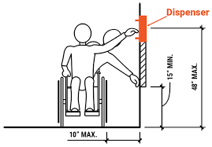
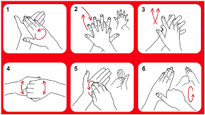

What is ABHR?
Alcohol-Based Hand Rub (ABHR) is a gel, solution, or foam containing alcohol (typically ethanol or isopropanol at 60–80% concentration) formulated specifically for hand disinfection in healthcare settings. It is the WHO-preferred method for routine hand hygiene when hands are not visibly soiled.
ABHR was recommended as the gold standard for routine hand hygiene in healthcare settings by the WHO's 2009 Hand Hygiene Guidelines, a position reaffirmed across all subsequent evidence reviews.

Alcohol denatures proteins and disrupts cell membranes of microorganisms, killing most bacteria, fungi, and enveloped viruses (including SARS-CoV-2) within 20–30 seconds of contact time.
How ABHR Works
The antimicrobial activity of ABHR depends on the alcohol concentration, the volume applied, and the duration of hand coverage during application. Understanding this mechanism helps explain both its effectiveness and its limitations.
Protein Denaturation
Alcohol disrupts hydrogen bonds in microbial proteins, causing them to lose structure and function — killing the organism.
Membrane Disruption
Alcohol dissolves lipid membranes of enveloped viruses and bacteria, rapidly destroying their integrity.
Rapid Action
ABHR achieves log₅ bacterial reduction in under 30 seconds — far faster than a standard soap-and-water handwash.
Residual Effect
Some ABHR formulations include emollients that support skin integrity and minor persistent antimicrobial action.
ABHR does not work against Clostridioides difficile (C. diff) spores or norovirus, because these organisms lack lipid envelopes or produce resistant spore coats. This is why soap and water is mandated in C. diff outbreak situations — the mechanical friction washes spores off the skin rather than killing them.
ABHR vs Soap & Water
Knowing which method to use in which situation is a core clinical competency. The decision should be based on the level and type of contamination, not on convenience.
| Factor | ABHR | Soap & Water |
|---|---|---|
| Time required | 20–30 seconds | 40–60 seconds |
| Visibly soiled hands | ❌ Not suitable | ✅ Required |
| C. difficile / norovirus | ❌ Not effective | ✅ Required |
| Most bacteria & viruses | ✅ Highly effective | ✅ Effective |
| Skin tolerability | ✅ Better (with emollients) | ⚠️ More drying |
| Point-of-care use | ✅ Preferred | ⚠️ Requires sink access |
| After toilet use | ❌ Not acceptable | ✅ Required |
Use ABHR for all routine hand hygiene moments unless one of the mandatory soap-and-water situations applies. When in doubt, use soap and water — it is never the wrong choice, just the slower one.
Correct ABHR Technique
The WHO-recommended ABHR technique covers all hand surfaces in a standardised sequence. The entire procedure should take 20–30 seconds and use enough product to keep hands moist throughout all steps.
-
1Apply one palmful of product Dispense enough ABHR to cover all surfaces. Cup the product in your palm before beginning.
-
2Rub palms together Rub palm to palm with fingers extended until product is evenly spread across both palms.
-
3Right palm over left dorsum & vice versa Interlace fingers and rub the back of each hand with the opposite palm to cover dorsal surfaces.
-
4Palm to palm, fingers interlaced Rub between fingers with palms facing — this covers the interdigital spaces.
-
5Backs of fingers to opposing palms Interlock fingers (knuckle-to-palm) and rub to cover the backs of the fingers and knuckle creases.
-
6Rotational rubbing of thumbs Clasp each thumb in the opposite palm and rotate. Thumbs are frequently missed.
-
7Rotational rubbing of fingertips Rub fingertips of each hand in the opposite palm in a circular motion to cover nail folds and fingertips.
-
8Once dry, hands are safe Do not rinse or dry with a towel. ABHR must air-dry completely for full efficacy. If hands are still wet, more product was needed.

Using too little product (hands dry before step 4), skipping thumbs and fingertips, wiping hands on clothing before dry, and applying ABHR over visibly dirty hands.